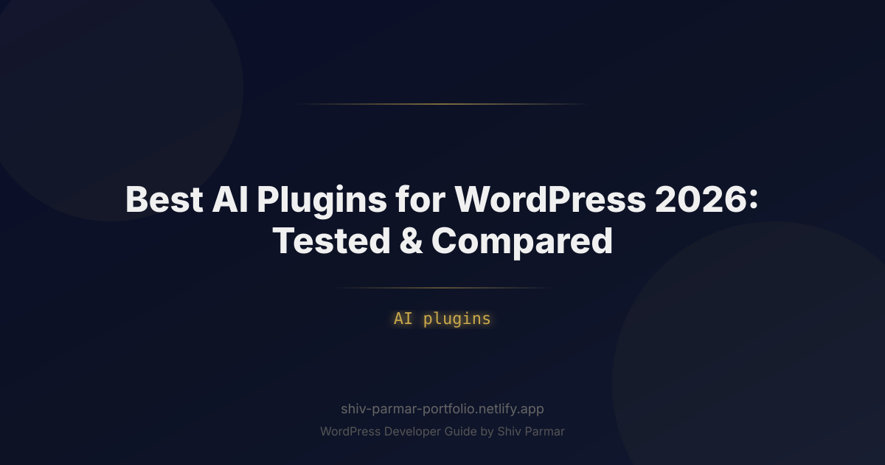

Best AI Plugins for WordPress 2026: Tested & | Shiv Parmar
Table of Contents
The web development landscape has reached a defining inflection point in 2026. Managing a WordPress website without leverage from artificial intelligence is rapidly becoming as obsolete as editing raw database tables via command line. What began years ago as simple text-spinning tools has evolved into a deeply integrated ecosystem of intelligent agents capable of writing context-aware content, writing custom site logic, auto-optimizing technical SEO, and personalizing user experiences in real time.
For site owners, agencies, and enterprise developers, incorporating modern AI plugins into WordPress is no longer about novelty—it is about operational survival and competitive advantage. The modern WordPress AI tech stack leverages Large Language Models (LLMs), multimodal vision engines, and vector database embeddings directly within the familiar Gutenberg dashboard and REST API architecture. Whether you are running a high-traffic e-commerce store, an enterprise news outlet, or a client agency, choosing the right toolchain determines how fast you can scale without inflating overhead.
In this guide, we break down the definitive, hands-on benchmark of the top AI tools for WordPress in 2026. We tested dozens of solutions across key performance indicators—including latency, API cost efficiency, core performance impact, and practical output quality—to bring you this actionable comparison. From autonomous content workflows to custom implementation via the official ChatGPT plugin and API framework, here is everything you need to know to transform your WordPress site into an intelligent digital asset.
What is WordPress AI and How Do AI Plugins Work?
At its core, WordPress AI refers to the integration of machine learning algorithms, deep learning networks, and natural language processing (NLP) models into the WordPress core publishing framework. Rather than replacing the underlying PHP and MySQL infrastructure, modern AI plugins act as intelligent middleware. They connect your database, content editor, and user telemetry with cloud-hosted AI infrastructure (such as OpenAI's GPT-4o and o3 models, Anthropic's Claude 3.5 Sonnet, or open-source weights like Llama 3 running on custom endpoints).
These plugins operate through three primary architectural patterns:
- Direct API Bridge: The plugin communicates via REST or WebSockets with external endpoints (e.g., OpenAI API). You provide an API key, and the plugin translates WordPress hooks and editor events into structured prompts, rendering the response directly into the block editor or custom backend interfaces.
- On-Server Local Processing: Lightweight machine learning models execution locally using PHP extensions or WebAssembly (WASM) for privacy-conscious applications like basic content categorization or simple search indexing.
- Retrieval-Augmented Generation (RAG): Advanced plugins vectorize your site's posts, pages, and custom post types, storing vector embeddings in databases like Pinecone, Qdrant, or local SQLite extensions. When a user asks a question via an onsite chatbot, the plugin retrieves contextual site data first, feeding it to the LLM to deliver hyper-accurate, hallucination-free answers.
Understanding these mechanics is essential for choosing the right plugin. A simple text tool requires nothing more than basic API connectivity, whereas an enterprise intelligent search assistant demands vector database integration and asynchronous endpoint execution to maintain site speed.
Why AI Plugins Matter in 2026
Search engines and digital consumption patterns have fundamentally changed. Search engines now emphasize contextual authority, intent matching, and multimodal answer engine optimization (AEO). Modern AI integration is no longer restricted to churning out simple 500-word blog posts; it is about creating rich, dynamic, data-driven web experiences at scale.
Integrating a robust ChatGPT plugin or native AI module into your WordPress stack solves three urgent operational challenges:
- Content Velocity without Quality Loss: Producing comprehensive articles, structured schema markup, and localized translations manually takes dozens of hours per week. AI tools allow single editors to manage content output that previously required an entire editorial department.
- Personalization and Conversational UX: Traditional search bars are being replaced by interactive conversational assistants. Users expect instant, context-aware answers to complex queries directly on your site.
- Operational Efficiency: From writing custom PHP code snippets to generating alt text for thousands of media library images automatically, AI plugins eliminate low-level repetitive admin tasks.
| Workflow Feature | Traditional WordPress Stack | 2026 AI-Enabled WordPress Stack |
|---|---|---|
| Content Creation | Manual writing, manual outline creation, manual stock photo search | LLM-assisted research, automated outline generation, AI image generation |
| On-Page SEO | Manual keyword placement, manual metadata entry | Real-time semantic optimization, auto-generated JSON-LD schema, vector intent targeting |
| Customer Support | Static contact forms, delayed email ticketing systems | RAG-powered conversational chatbots with live WooCommerce database context |
| Code Customization | Hiring developers or hunting snippets on external forums | In-dashboard AI code generation, automated syntax validation, context-aware hook suggestions |
Step-by-Step Guide: Selecting, Testing, and Deploying the Best AI Plugins
1. Top WordPress AI Plugins Tested & Compared
We evaluated the leading solutions in the market today across usability, functionality, extensibility, and site performance impact. Below are the standout performers for 2026.
| Plugin Name | Primary Use Case | Key LLMs Supported | Best Feature | Performance Impact |
|---|---|---|---|---|
| AI Engine (by Jordy Meow) | All-in-one AI Hub & Chatbot | OpenAI (GPT-4o/o3), Claude 3.5, Custom APIs | RAG Embeddings, Copilot mode, Audio/Vision support | Low (Asynchronous REST API) |
| Rank Math Content AI | SEO & Semantic Optimization | Proprietary Engine / OpenAI API | Real-time semantic score, meta generation, competitor gap AI | Very Low (Cloud cached) |
| Uncanny Automator + AI | Workflow & Process Automation | OpenAI, Google Gemini, Anthropic | No-code conditional logic triggering AI steps across 150+ plugins | Low (Runs background jobs) |
| Elementor AI | Page Design & Layout Generation | Custom visual generation models | Generates container layouts, custom CSS, and copy directly in editor | Negligible (Build-time only) |
| AI Power (Complete AI Pack) | Bulk Content & Commerce Automation | OpenAI, Azure AI, ElevenLabs | WooCommerce product description bulk generator, Pinecone integration | Moderate (Depending on bulk jobs) |
AI Engine by Jordy Meow
AI Engine remains the gold standard for site administrators who demand granular control over their AI infrastructure. Rather than locking you into a subscription fee for token wrappers, AI Engine connects directly to your personal API accounts. It allows you to build custom chatbots with vectorized memory, create bespoke prompt templates, translate pages instantly, and run dynamic content generation tasks straight from your dashboard.
Rank Math Content AI
Rank Math has seamlessly woven machine learning into the editorial process. Content AI analyzes real-time search engine results pages (SERPs) for target queries and feeds semantic suggestions directly into the WordPress Gutenberg editor. It helps writers hit exact entity targets, suggests appropriate internal linking strategies, and auto-generates optimized title tags and meta descriptions in seconds.
Uncanny Automator
If you want to create sophisticated backend automation without writing custom code, Uncanny Automator is indispensable. You can define triggers—such as a user purchasing a WooCommerce product, completing a LearnDash course, or submitting a Forminator contact form—and pass that data into an AI prompt step. The AI output can then update user metadata, draft a personalized email, or publish a customized response dynamically.
2. How to Securely Connect External AI APIs to WordPress
When running advanced WordPress AI implementations, relying on third-party subscription wrappers can become costly at scale. Connecting directly to provider APIs (like OpenAI or Anthropic) via PHP gives you full control over usage costs, model selection, and execution parameters. However, hardcoding secrets into theme files is a major security flaw.
First, define your secret API keys in your server's wp-config.php file, keeping them out of your database and version control repositories:
// Add this to wp-config.php above the "That's all, stop editing!" line
define( 'OPENAI_API_KEY', 'sk-proj-your-actual-secure-api-key-here' );
Next, implement a wrapper function in your custom plugin or standard functions.php file using the native WordPress HTTP API (wp_remote_post) alongside the Transients API to cache responses and minimize latency:
/**
* Fetch cached response from OpenAI Chat Completions API
*
* @param string $prompt The prompt sent to the LLM.
* @return string The generated response text.
*/
function my_custom_ai_generate_text( $prompt ) {
$transient_key = 'ai_response_' . md5( $prompt );
$cached_response = get_transient( $transient_key );
if ( false !== $cached_response ) {
return $cached_response;
}
if ( ! defined( 'OPENAI_API_KEY' ) ) {
return 'Error: API key is not configured in wp-config.php.';
}
$url = 'https://api.openai.com/v1/chat/completions';
$body = array(
'model' => 'gpt-4o-mini',
'messages' => array(
array(
'role' => 'system',
'content' => 'You are an expert technical editorial assistant for a WordPress publication.',
),
array(
'role' => 'user',
'content' => $prompt,
),
),
'temperature' => 0.7,
'max_tokens' => 500,
);
$args = array(
'body' => wp_json_encode( $body ),
'headers' => array(
'Authorization' => 'Bearer ' . OPENAI_API_KEY,
'Content-Type' => 'application/json',
),
'timeout' => 30,
);
$response = wp_remote_post( $url, $args );
if ( is_wp_error( $response ) ) {
return 'Execution error: ' . $response->get_error_message();
}
$data = json_decode( wp_remote_retrieve_body( $response ), true );
if ( isset( $data['choices'][0]['message']['content'] ) ) {
$clean_text = sanitize_text_field( $data['choices'][0]['message']['content'] );
// Cache the successful response for 12 hours
set_transient( $transient_key, $clean_text, 12 * HOUR_IN_SECONDS );
return $clean_text;
}
return 'Error: Failed to process payload from API.';
}
3. Building a Custom Endpoint for a WordPress ChatGPT Integration
Creating a light, customized conversational feature or integrating an custom endpoint for your site requires exposing a secure REST API route within WordPress. This approach ensures your frontend user interface interacts with WordPress asynchronously without exposing your API credentials to browser client scripts.
The code example below demonstrates how to register a custom WordPress REST API endpoint designed to act as an backend proxy for a site assistant or custom ChatGPT plugin bridge:
/**
* Register custom REST API route for site-level AI queries
*/
add_action( 'rest_api_init', function () {
register_rest_route( 'custom-ai/v1', '/query/', array(
'methods' => 'POST',
'callback' => 'handle_custom_ai_rest_query',
'permission_callback' => 'verify_ai_request_permissions',
) );
} );
/**
* Permission verification callback
*/
function verify_ai_request_permissions( $request ) {
// Verify Nonce or check capabilities depending on use case
$nonce = $request->get_header( 'X-WP-Nonce' );
return wp_verify_nonce( $nonce, 'wp_rest' );
}
/**
* Handle incoming REST route payload and call LLM wrapper
*/
function handle_custom_ai_rest_query( WP_REST_Request $request ) {
$params = $request->get_json_params();
$user_query = isset( $params['query'] ) ? sanitize_text_field( $params['query'] ) : '';
if ( empty( $user_query ) ) {
return new WP_REST_Response( array( 'error' => 'Missing search parameter.' ), 400 );
}
// Call the cached generator function created earlier
$ai_response = my_custom_ai_generate_text( $user_query );
return new WP_REST_Response( array(
'success' => true,
'response' => $ai_response,
), 200 );
}
4. Automating Content Workflows and On-Page SEO
To implement an efficient automated workflow using AI plugins, avoid using full-auto publishing scripts. Fully automated content pipelines create duplicate content risks and lack context. Instead, apply AI intentionally throughout your editorial operations:
- Outline Generation: Use your chosen AI editor extension to parse high-ranking competitor URLs and structure intuitive content outlines using relevant heading hierarchy (`h2`, `h3`).
- Semantic Drafting: Expand individual sections interactively. Use prompts that specify structural limits, target keyword clusters, and brand voice guidelines.
- Automatic Schema Enrichment: Leverage plugins like Rank Math AI or Schema Pro AI to inject validated JSON-LD schema blocks based on your content type (e.g., Article, Product, FAQ, HowTo).
- Media Accessibility: Run batch background scripts via plugins like AI Engine to scan newly uploaded images in your Media Library, generate context-aware alt text, and update database fields seamlessly.
5. Performance Tuning and Database Optimization for AI Plugins
One common oversight site owners commit when deploying AI plugins is ignoring their performance footprint. External API calls take time to resolve. If executed synchronously during page renders or backend save hooks, they will trigger severe latency, slow down TTFB (Time to First Byte), and cause server timeouts.
Follow these optimization strategies to keep your WordPress core lightning fast:
- Use Background Processing APIs: Offload heavy operations (such as bulk generating summaries or vectorizing long posts) to the
Action Schedulerlibrary or native WordPress cron tasks (`wp_schedule_single_event`). - Clean Up Database Transients: Plugins store intermediate responses in the
wp_optionstable as transients. Over time, expired transients can inflate your database. Schedule regular cleanups using WP-Optimize or automated WP-CLI routines:wp option delete expired_transients - Disable Unnecessary Dashboard Features: If you use an all-in-one AI plugin solely for backend content drafting, disable site-wide customer support chat modules, admin menu widgets, and visual generator assets to avoid loading unnecessary CSS and JavaScript assets on the frontend.
Best Practices for WordPress AI Integration
To safely scale machine learning integrations across your enterprise WordPress installations, apply these fundamental software design principles:
1. Isolate Environment Credentials
Never enter raw API keys directly into public plugin configuration forms if those settings are accessible by non-admin users or stored as plain text inside database option tables. Load keys dynamically from server-level environment variables ($_ENV) or define them within wp-config.php using explicit constant definitions.
2. Enforce Human-in-the-Loop (HITL) Workflows
Algorithms excel at speed, structuring, and semantic synthesis, but they lack firsthand experience and are susceptible to hallucinations. Establish a mandatory Human-in-the-Loop (HITL) editorial protocol. Every piece of generated text, schema snippet, or PHP code MUST pass through human editorial review before being published live to a production site.
3. Streamline Client-Side Requests with Nonces and Asynchronous Rendering
When implementing user-facing tools like interactive search windows, chat widgets, or product recommendations powered by a ChatGPT plugin integration, always execute requests asynchronously via the REST API or WebSockets using JavaScript `fetch()`. Ensure every endpoint verifies a cryptographic X-WP-Nonce header to protect against Cross-Site Request Forgery (CSRF) and unwanted API credit consumption by unauthorized bots.
4. Cache Aggressively at the Data Layer
LLM API calls can get expensive when handling thousands of hits per day. Use server-side caching (Redis or Memcached object caching alongside WordPress transients) to ensure that identical or highly similar user queries receive cached responses instantly without initiating duplicate requests to upstream AI model endpoints.
Common Mistakes to Avoid
While the benefits of incorporating machine learning into your website workflow are vast, stepping into these common pitfalls can hurt your brand, diminish search rankings, and introduce server instability.
1. Unvetted Auto-Blogging and Mass Content Generation
Using autonomous scripts to auto-generate and publish hundreds of low-quality, programmatic posts without manual curation is a direct violation of Google's Search Essentials policies regarding automated spam. Content engines designed solely to manipulate search rankings without adding original research, technical depth, or unique insights will eventually face algorithmic devaluation in AI-driven search engine interfaces.
2. Exposing API Credentials in Client-Side Code
A severe security vulnerability on modern WordPress sites occurs when site administrators embed their raw OpenAI or Anthropic API keys directly into frontend JavaScript scripts or custom block widgets. malicious actors can easily inspect your page source code, retrieve the API key, and consume your credit balance within minutes. Always proxy all queries through custom server-side endpoints built in PHP.
3. Blocking Main Thread Execution with Synchronous API Requests
Executing an HTTP API call directly inside heavy template files (such as single.php or header.php) will pause page processing until the third-party server returns a response. If the AI service experiences latency or outages, your entire site will freeze, causing HTTP 504 Gateway Timeouts and alienating visitors. Keep AI logic confined strictly to deferred REST endpoints or background queue workers.
4. Neglecting Core Web Vitals and Frontend Scripts Asset Bloat
Installing multiple feature-heavy AI plugins often introduces unnecessary JavaScript bundles, heavy visual canvas libraries, and continuous polling scripts to your site's frontend. Always run speed audits using tools like PageSpeed Insights after deploying any new plugin. Ensure that administrative tools load scripts exclusively within the /wp-admin/ control panel rather than loading scripts site-wide across public pages.
Conclusion
Integrating AI plugins into your site is no longer just a trend—it has become essential for staying competitive in 2026. Whether you want to streamline your content creation using a powerful ChatGPT plugin, optimize on-page SEO, or improve user engagement with intelligent chatbots, leveraging the right WordPress AI tools can save you countless hours while driving measurable growth.
However, the real secret to success lies in thoughtful implementation. Rather than overloading your site with every new tool available, focus on selecting high-impact AI plugins that directly align with your business goals. Always prioritize site speed, user experience, and seamless integration to ensure your automated features enhance your brand rather than slow it down.
Ready to supercharge your website with cutting-edge functionality? If you need expert assistance setting up these tools or building a fast, custom digital experience, Shiv Parmar is available for professional WordPress development work worldwide. From tailored AI integrations to end-to-end custom website builds, get in touch today to elevate your WordPress site to the next level.